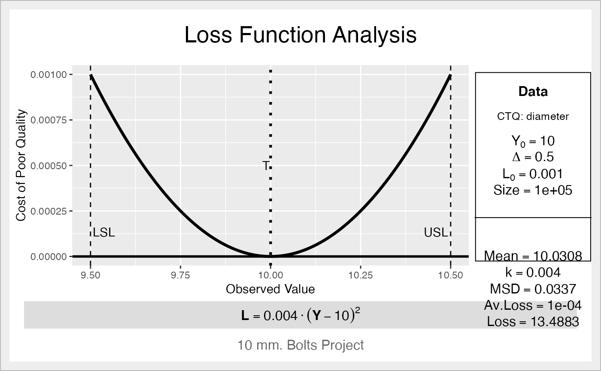

This function performs a Quality Loss Function Analysis, based in the Taguchi Loss Function for "Nominal-the-Best" characteristics.
ss.lfa( lfa.data, lfa.ctq, lfa.Delta, lfa.Y0, lfa.L0, lfa.size = NA, lfa.output = "both", lfa.sub = "Six Sigma Project" )
| lfa.data | Data frame with the sample to get the average loss. |
|---|---|
| lfa.ctq | Name of the field in the data frame containing the data. |
| lfa.Delta | Tolerance of the process. |
| lfa.Y0 | Target of the process (see note). |
| lfa.L0 | Cost of poor quality at tolerance limit. |
| lfa.size | Size of the production, batch, etc. to calculate the total loss in a group (span, batch, period, ...) |
| lfa.output | Type of output (see details). |
| lfa.sub | Subtitle for the graphic output. |
Constant k for the loss function
Expression with the loss function
Mean Squared Differences from the target
Average Loss per unit of the process
Total Loss of the process (if a size is provided)
lfa.output can take the values "text", "plot" or "both".
For smaller-the-better characteristics, the target should be zero (lfa.Y0 = 0).
For larger-the-better characteristics, the target should be infinity (lfa.Y0 = Inf).
Taguchi G, Chowdhury S,Wu Y (2005) Taguchi's quality engineering handbook. John
Wiley
Cano, Emilio L., Moguerza, Javier M. and Redchuk, Andres. 2012.
Six Sigma with R. Statistical Engineering for Process
Improvement, Use R!, vol. 36. Springer, New York.
https://www.springer.com/gp/book/9781461436515.
EL Cano
ss.lfa(ss.data.bolts, "diameter", 0.5, 10, 0.001, lfa.sub = "10 mm. Bolts Project", lfa.size = 100000, lfa.output = "both")#> $lfa.k #> [1] 0.004 #> #> $lfa.lf #> expression(bold(L == 0.004 %.% (Y - 10)^2)) #> #> $lfa.MSD #> [1] 0.03372065 #> #> $lfa.avLoss #> [1] 0.0001348826 #> #> $lfa.Loss #> [1] 13.48826 #>